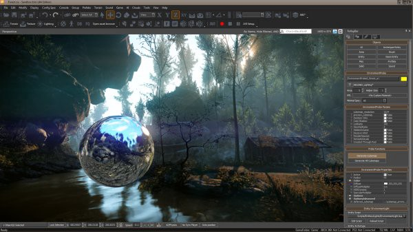
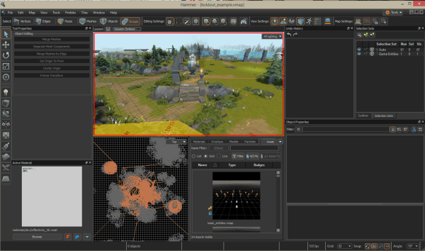

VR丨有哪些靠谱的VR开发工具之引擎篇
@C7210 ：靠谱的工具都有哪些？在不同的学习阶段又该怎样进行合理的选择？本文将聚焦于这两个问题向你介绍一系列主流设计开发工具，包括引擎、3D建模、2D绘制、音效及动效制作等多个方面，并按照“起步”、“进阶”和“高级”的次序进行排列，希望能帮助你在VR学习的道路上更加聚焦而少些迷茫。
欢迎关注译者（高级交互设计师、猫奴、吉他手、鼓手、老狗、单身，现就职于腾讯ISUX）的微信公众号：Beforweb
这儿有他的访谈：《优设访谈！腾讯高级交互设计师C7210的十年设计路》
几年前，我（英文原文作者）很沉迷于“魔兽世界”。那真是段好时光，我从中得到了太多乐趣。
无论“魔兽世界”还是其他同类MMORPG（大型多人在线角色扮演）游戏，它们都有一个共同之处：大，非常巨大。
在那些游戏里探索时，你甚至会心怀敬畏。你会琢磨怎样才能搞出如此宏大的世界。答案是这样的：
很大的开发团队+数年时间的精心打造。
如今，作为初涉VR的开发者，以“魔兽世界”作为实战目标或许有些不太实际；我们更需要一个个切实可行的短期目标，更需要专注、执行、保持动力、步步为营。
当然，长远目标的重要性同样不言而喻。合理的目标可以驱动你战胜各种挑战而不断前行。
在前行的道路上，我们都需要靠谱的工具
所谓靠谱的工具都有哪些？在不同的学习阶段又该怎样进行合理的选择？本文将聚焦于这两个问题向你介绍一系列主流设计开发工具，包括引擎、3D建模、2D绘制、音效及动效制作等多个方面，并按照“起步”、“进阶”和“高级”的次序进行排列，希望能帮助你在VR学习的道路上更加聚焦而少些迷茫。
需要说明，这份清单所基于的是我个人的学习和实践历程，其中某些“高级”阶段的工具尚未在自己的实战中使用到。
关于学习目标
首要问题：你的目标是什么？
希望成为独立开发者，自己包揽全部职能，还是与朋友合作，亦或是成为自由职业者？
或者你希望将来能够在VR领域找到一份适合自己的工作，譬如将加盟3A游戏品牌作为终极目标？
无论怎样，我都建议你从基础开始，譬如通过Unity和Blender起步，聚焦于最简单的阶段性小目标，由浅入深的探索设计与开发技能。
如果你希望找到一份正式的VR开发工作，那么在进阶的过程中，你将需要学习更多更加专业化的工具。
首先制定符合自己理想及实际条件的长期目标，接下来逐一考虑短期的阶段性目标，结合自己的时间分配原则来规划自学进度，保持实践化的学习模式，一步一步提升自己运用各种VR开发工具的能力。
明确了目标之后，我们来实际了解一下在不同的阶段都有哪些工具需要你重点关注和学习。
游戏引擎
即便是从零开始打造VR app，你也不必自己编写所有需要程序驱动的互动机制。
有没有思考过VR中的头部与位置追踪是怎样实现的？可曾被VR游戏当中真实而迷人的互动方式所震撼？
别被吓到，你所接触到的多数东西实际上都是由游戏引擎提供标准化驱动的，这意味着你无需动手来编写追踪与控制方面的机制，只要对这些已有的底层功能模块进行必要的调整然后运用到自己的app里就可以。
这显然可以让我们这些尝试自力更生的设计师们过的更加轻松一些。实际上，即便你是彻底的新手，在正确的工具的辅助下，也可以很快实现出一个最基础的可互动的VR世界。
或许你现在有些纳闷：我们的目标是设计开发VR app，这和“游戏”有什么关系？答案很简单：游戏引擎为我们提供了创建3D世界并编写互动脚本所需的全部工具。
目前的主流游戏引擎都会默认提供VR SDK（Software Development Kit，软件开发工具包），所以正像前面提到的那样，我们在打造自己的app时，无需为头部追踪一类的复杂技术问题而过多烦恼。
有点兴奋了？我们来一探究竟。
起步
Unity

起步阶段，Unity是你的最佳选择。确实需要花些时间去学习，但初步掌握之后你就能很快的创建出一个基础的3D世界，并通过脚本来实现互动。
所有主流VR设备都有针对Unity提供SDK，你可以便捷的将app部署到相应的硬件当中。
Unity同时支持业界标准格式，所以你能够将那些通过Blender、Maya或3DS Max制作的3D模型或动画导入到Unity当中。
Unity支持三种编程语言，你通常会用到C#来编写脚本。
最棒的一点，你可以选择免费的个人版本来学习制作自己的项目。
线上有丰富的教学资源供你选择学习，同时Unity官网也提供了很多教程及开发文档。此外Treehouse、Coursera、Udemy等教学平台还有一些不错的付费课程资源。
进阶
Unreal Engine

Unreal其实也很适合起步阶段。同样提供免费版本供个人使用，同时还具备更多高级功能，包括Blueprints可视化脚本工具等等。与Unity相比，Unreal上手的难度会略高一些。
所以我个人建议，你可以在熟悉了Unity之后尝试转向Unreal；当然同时掌握两者并根据不同的项目需求来选择使用则更为理想。
你需要通过.fbx格式来导入那些在其他工具当中制作的3D模型。脚本方面则是C++。
当前主流VR设备都有针对Unity提供SDK。
同样，你可以在线上找到大量的免费或付费教学资源，包括文章和视频等等；Unreal官网也提供了很多参考文档。
高级
我个人还没有在实际项目中试用过下面两个引擎，但推荐你在熟悉了Unity和Unreal Engine之后考虑尝试。
CryENGINE
CryENGINE便是Crytek用来打造“孤岛”系列大作（“孤岛惊魂”系列、“孤岛危机”系列）的引擎，绝对值得你在修炼到一定程度之后拿来学习研究。不过要记得，VR app所使用的引擎越是高端，画面越为精彩逼真，对硬件特别是PC显卡的要求也就越高，相应的用户数量就越少。
价格方面，Crytek采用了按需付费的模式。这意味着你可以免费使用基础版本，并根据自己的需求来购买其他功能模块；付费金额当中的70%会作为基金用来支持独立开发者们（你也可以自己选择基金比例）。
CryEngine V支持Oculus Rift、HTC Vive、Playstation VR和OSVR等平台。
Source Engine
Valve用来打造“半条命”、“半条命2”和“反恐精英”等经典大作的引擎。你可以免费使用，但产出的任何作品都必须在Steam平台发布。
Valve还针对VR发布了免费的Destinations Workshop Tools工具集。鉴于Valve和HTC Vive的合作关系，Source引擎绝对是你在面向Vive打造产品时的重点考虑对象。
待续：第二篇，3D建模工具。
「最全面的VR设计好文合集」
- 谷歌设计师出品的VR设计入门指南
- VR设计指南之基础概念与设计工具
- 一名UX设计师的VR设计初体验
- 设计师该怎样从3个方面学习VR设计？
- 设计师进入VR领域会遇到哪些状况？（附解决方法）
- 关于谷歌的VR新平台，设计师应该知道的9件事
- 站在VR的大门前！主流VR平台交互特性浅析
- 从VR UI设计案例中学到的六个经验
- 浅聊故事板在VR设计中的运用（附模版下载）
- VR新工具之便捷实用的POV纸质原型
- 谷歌VR APP实战！UNITY与CARDBOARD APP基础实践（一）
- 谷歌VR APP实战！UNITY与CARDBOARD APP基础实践（二）
- 谷歌VR APP实战！UNITY与CARDBOARD APP基础实践（三）

【优设网 原创文章 投稿邮箱：yuan@uisdc.com】
================关于优设网================
“优设网uisdc.com“是国内人气最高的网页设计师学习平台，专注分享网页设计、无线端设计以及PS教程。
【特色推荐】
设计师需要读的100本书：史上最全的设计师图书导航：http://hao.uisdc.com/book/。
设计微博：拥有粉丝量180万的人气微博@优秀网页设计 ，欢迎关注获取网页设计资源、下载顶尖设计素材。
设计导航：全球顶尖设计网站推荐，设计师必备导航：http://hao.uisdc.com